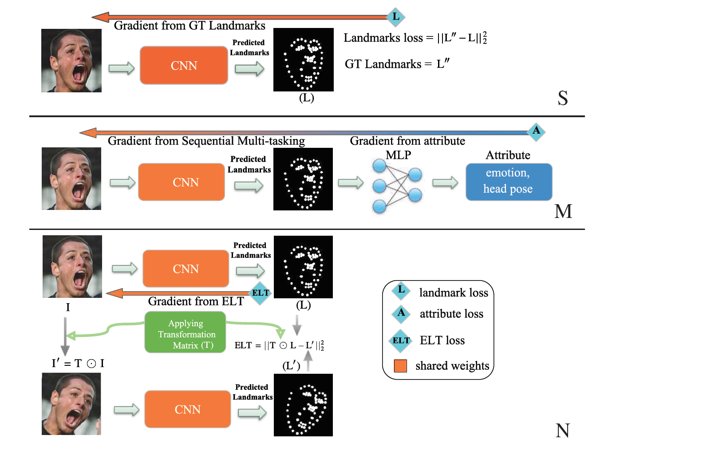
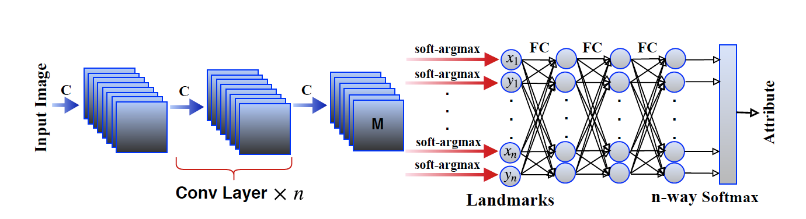
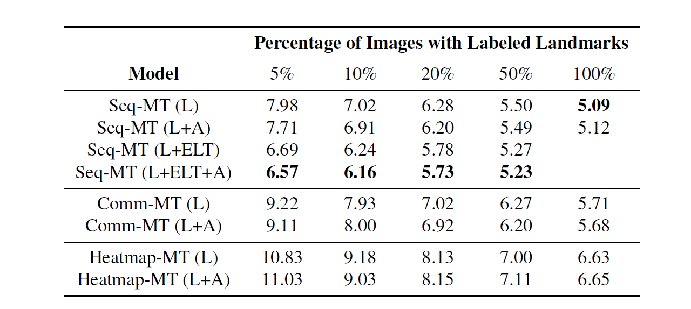

Improving Landmark Localization with Semi-Supervised Learning
URL:https://arxiv.org/abs/1709.01591?context=cs
这篇论文是关于landmark检测的，作者认为目前公开的数据集中标注landmark终究量比较少，但是标注属性（比如分类）的数据集实际上有很多，因此本论文提出半监督的神经网络模型结合标注landmark的数据集和标注属性的数据集来提高landmark定位的准确性。

上面这张图基本涵盖了这篇论文的全部内容，论文所提方法主要分为三个部分：
- 利用标注的landmark数据集来训练CNN模型（图中的S代表S个landmark标注样本）
- Sequential Multi-Tasking：对应上图的第二个示例，就是利用标注属性的数据集来辅助landmark位置的学习，整个模型结构是一个串行的网络结构，下图是更加细致的结构表示，网络的前半段是一个标准的CNN网络，最后的一层feature map在经过soft-argmax之后输出预测的landmark位置，2xn个坐标值又会作为后半段网络的输入，后半段网络整体是一个MLP网络，用来预测Image的属性（图中的M代表M个属性标注样本）；
 - Equivariant Landmark Transformation（ELT）：这一部分对应上图的第三个示例，是一个无监督的网络结构。这一部分主要是增强网络对图片各种旋转变换的鲁棒性，网路结构的设计出发点是，变换矩阵T作用于图片I产生的图像I’在经过网络后得到的预测landmark L’应该和图片I经过网络得到的landmark L经过T作用后的landmark 保持一致，因此本质是一个无监督的处理过程。
- 那么综合上面三部分，整个模型的loss就可以被定义为以下这个公式，D为image和对应attribute组成的pair list，K为landmark数量， ˜Lk, Lk (I ) and S分别是landmark GT、landmark预测值、标注landmark的样本量，公式的前两部分分别上图的第二、第三部分的网络的loss，第三部分是上图第一部分网络的loss：

论文在6个不同的数据集上做了对比实验，下图是在人脸landmark数据集MultiPIE上做的对比实验：

本博客所有文章除特别声明外，均采用 CC BY-NC-SA 4.0 许可协议。转载请注明来自 Out of Memory！